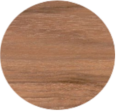

Dió

A dió, diófa kemény lombos faanyag, a közönséges dió anyaga.
Balkáni-elő-ázsiai flóraelem. Hegyvidéki fafaj, a balkáni cseres tölgyesek jellemző fája. Magyarországon vadon ritka, általában ültetett fa, néha elvadul, sok kultúrváltozata van. Enyhe éghajlaton, tápanyagban gazdag, mély vályogtalajokon jól fejlődik, gyorsan nő, magas kort ér meg.Magassága 20…30 m. Kérge kemény, világosszürke, repedezett, a kéregcserepek oldala fekete. Kéregvastagsága 1…2 cm.
Szárítás: Könnyen, problémamentesen szárítható, csak a gyökéranyagnál és a rovarszúrás okozta erezeti csomóknál keletkezhetnek kisebb repedések. Használat közbeni stabilitása közepes.
Megmunkálás: Minden szerszámmal jól és könnyen megmunkálható, jól késelhető, hámozható. Gőzölve jól hajlítható.
Rögzítés: Jól szegelhető, csavarozható. Jól ragasztható. A lúgos enyvek csersavfoltokat okozhatnak.
Felületkezelés:Szépen csiszolható, pórustömítéssel jól lakkozható. Nagy zsír- és viasztartalma miatt egyes lakkféleségek felhordása előtt a felületet semlegesíteni kell.
Tartósság A geszt mérsékelten tartós.
Bútor, parketta, falburkolat, furnér, faragás, esztergálás, hangszerkészítés, járműgyártás céljára használják. A diógyökér különösen dekoratív fafaragási és furnéranyag. Különleges felhasználási területe a puskatus illetve könnyű repülőgépek légcsavarjának készítése.